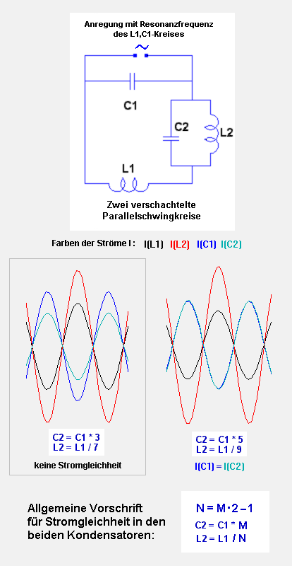
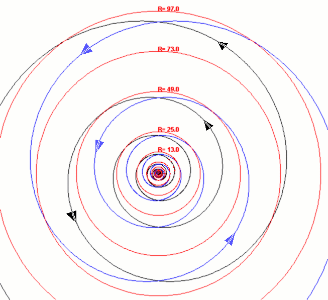
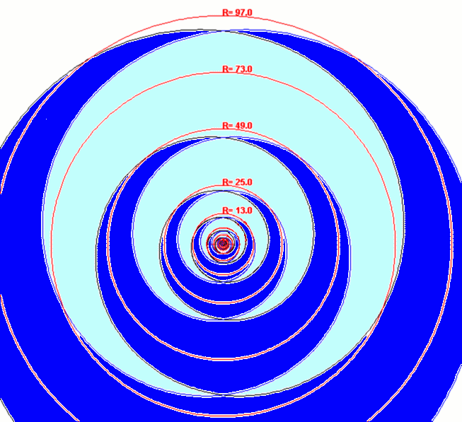
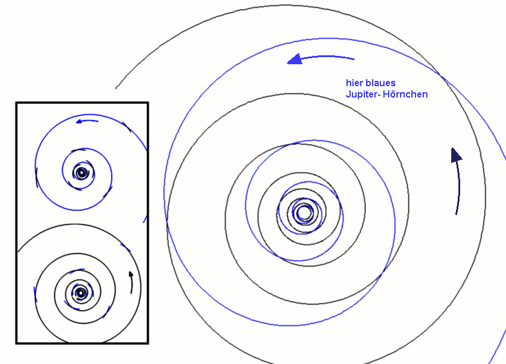
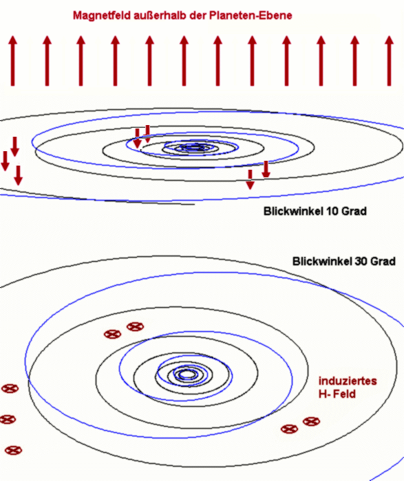
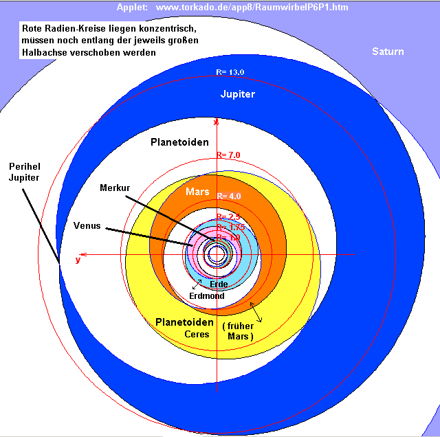
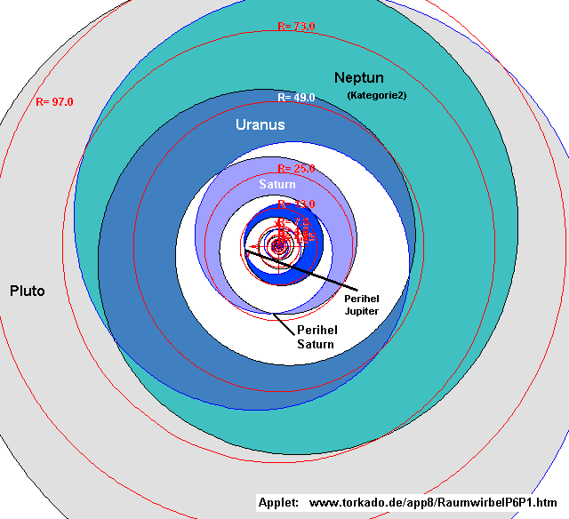
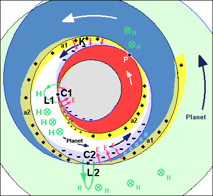
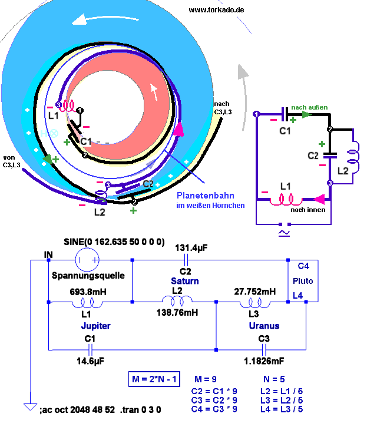
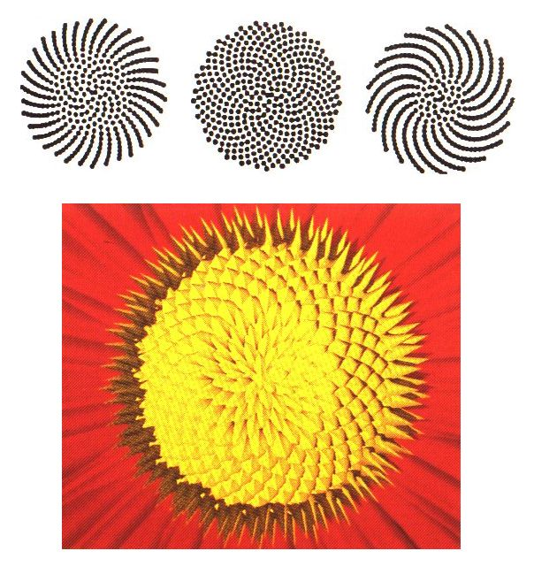

|
| Bode-Titius-Gesetz
(bekannt seit 1766) Setzt man den gemittelten Merkurabstand zu Sonne gleich 4, dann ist der Abstand Sonne-Venus gleich R0=4+3*1=7, der Abstand Sonne-Erde R1=4+3*2=10, der Abstand Sonne-Mars ist R2=4+3*4=16 . Das geht so weiter mit der gemittelten Bahn der Planetoiden (Ceres) R3=4+3*8=28, Jupiter R4=4+3*16=52, R5=Saturn 4+3*32=100 usw. . Die Zahlen 1, 2, 4, 8, 16, 32 sind immer Verdopplungen des Vorgängers. Dieser Fakt hat schon damals alle erstaunt. Für alle Planeten kann man demnach schreiben: Abstand zur Sonne RN = 4+3* 2^N , wenn man sie mit N durchnumeriert: Venus hat N=0, Erde hat N=1, Mars hat N=2 usw. |
Zitat Erich Mühlthaler
(Unser Sonnensystem, EWERTVERLAG,
ISBN 3-89478-222-6 )
Bode-Titius-Reihe
1766:
( 0 + 4):10 * 150*10^6 km = 60 * 10^6 km = Merkur
( 3 + 4):10 * 150*10^6 km = 105 *10^6 km = Venus
( 6 + 4):10 * 150*10^6 km = 150 *10^6 km = Erde
(12 + 4):10 * 150*10^6 km = 240 *10^6 km = Mars
(24 + 4):10 * 150*10^6 km = 420 *10^6 km = Ceres
(48 + 4):10 * 150*10^6 km = 780 *10^6 km = Jupiter
(96 + 4):10 * 150*10^6 km = 1500*10^6 km = Saturn
(192+ 4):10 * 150*10^6 km = 2940*10^6 km = Uranus
.......................................... Neptun
(384+ 4):10 * 150*10^6 km = 5820*10^6 km = Pluto
In Einheiten der Merkur-Bahn (alles durch 4):
( 0 + 4):4 = 1 = Merkur
( 3 + 4):4 = 1.75 = Venus
( 6 + 4):4 = 2.5 = Erde
(12 + 4):4 = 4 = Mars
(24 + 4):4 = 7 = Ceres
(48 + 4):4 = 13 = Jupiter
(96 + 4):4 = 25 = Saturn
(192+ 4):4 = 49 = Uranus
............ 73 = Neptun (Planet Kategorie 2)
(384+ 4):4 = 97 = Pluto
Diese Reihe funktioniert nach der Vorschrift
(x*2 - 1)
mit Ausnahme des Anfanges.
Beispiele:
2 Venusabstände - Merkurabstand = Erdabstand
2 Erdabstände - Merkurabstand = Marsabstand
(jeweils von Sonnenmittelpunkt aus gesehen)
1.75 = Venus
1.75*2 - 1 = 2.5 = Erde
2.5*2 - 1 = 4 = Mars
4*2 - 1 = 7 = Ceres
7*2 - 1 = 13 = Jupiter
13*2 - 1 = 25 = Saturn
25*2 - 1 = 49 = Uranus
(............ 73 = Neptun)
49*2 - 1 = 97 = Pluto
soweit Erich Mühlthaler.
(Weiterer Hinweis:
Elementarresonanzen
im Sonnensystem)
Jetzt ein
paar numerische Experimente von mir, die ich ein halbes Jahr vorher
gemacht hatte. Von Elektronik habe ich zwar fast keine Ahnung, aber
für einfache elektrische Schwingkreise reicht es noch. Die habe ich
verschachtelt und nach Quantisierungen gesucht, wenn man die Bauteile
mit L und C dimensioniert. Ich habe das kostenlose Programm LTSpice/Switcher
CAD von www.linear.com benutzt
Download: asc-Beispiel-Dateien
von meiner Simulation
(mit Anleitung für Anfänger)

Herausgekommen ist ebenfalls (x*2 - 1) für gleichartige
Bauteile (Planetenbahnen?).
N = M*2-1 (1)
C(subSchwingkr)=
C(Schwingkr) * M
L(subSchwingkr)= L(Schwingkr) / N
C2 = C1 * M (2)
L2 = L1 / N (3)
Hinweis: Sind
die Positionen von L1 und C1 in der Schaltung vertauscht, dann gilt
M
= N*2-1 (4), aber diesmal für gleiche
Ströme in den Spulen L1 und L2 .
Was haben die Planeten
oder ihre Bahnen mit Spule und Kondensator zu tun ?
Die Schachtelung der Parallelschwingkreise müsste auch immer weiter
fortgesetzt werden, also L3,C3 in den Kreis L2,C2 usw., um auf das Planetenmodell
zu passen.
Wirbel mit konstanter Krümmung
Dass sich laut Simulation in der nächsten Ebene der völlig gleiche Vorgang
wiederholt, indem die Strombeträge unverändert wieder auftauchen und
sogar gleiche Phasenlage haben, übrigens 180 Grad verschoben zur Spannung,
macht wegen der Verwandtschaft von Gleichung (1) und (4) eine Analogiebetrachtung
plausibel. In der Simulation wurden allerdings nur 2 Stufen statt 10
getestet.
Ich begann, im Planetensystem nach einer verschachtelten LC-Schaltung
zu suchen. Die Radien der Planetenbahnen werden mit Gl.(1) berechnet,
und es muss strömende Ätherflüsse geben, die ebenfalls zu diesem Aufbau
passen. Unter der vereinfachten Annahme einer Radienverdopplung bei
jedem Spiralenumlauf bietet sich zunächst ein System logarithmischer
Spiralen an, die einwärts- und auswärts führen (Abb.2, blaue und schwarze
Linien).
Einwärts-und auswärtsführende Flüsse haben die gleiche Drehrichtung.
Sie nähern sich, kreuzen sich flach und entfernen sich wieder. Das sich
ergebende optische Muster ähnelt ineinander greifenden Hörnchen. In
Abb.3 wurde jedes zweite Hörnchen mit der gleichen Farbe versehen. Jetzt
erkennt man die Hörnchen besser.
|
 Abb.2 |
 Abb. 3 |
In Abb.2 und 3 wurden
zusätzlich konzentrische rote Kreise eingezeichnet, die die Radien der
Planetenbahnen nach Mühlthaler haben, genau wie unten in Abb.6 und 7.
Man muss sie noch exzentrisch gegeneinander verschieben, jeweils durch
die Hörnchenspitzen, dann zeigen sie jeweils die ungefähre Planetenbahn
an, die bekanntlich kein reiner Kreis ist.
Berechnung
Für Abb.2 und 3
wurde eine Spirale entworfen, die in der Mitte beim Radius Eins anfängt,
nach außen verläuft (positives k in Gl.(5)), und zwar so, dass sich bei
jedem Umlauf der Radius verdoppelt. Wann und ob dieses Nach-Außen-Laufen
endet, sei offen gelassen. Irgendwann, vielleicht nach maximal 10 Umläufen,
ist aber die auslaufende Spirale von ihrer hereinlaufenden Gegenspur (negatives
k) räumlich entkoppelt, da jede eine sehr flache Kegelhälfte bildet und
zwischen ihnen kann dort kein Planet mehr pendeln. Die einlaufende Spur
endet im Wendekreis beim Radius 1.
Die allgemeine Gleichung zur Berechnung lautet:
R = 1 + F^(phi / k) mit k = ± 2p * ln(F) / ln2 Gl.(5)
wobei phi der Phasenwinkel ist. Hier ist zunächst offen, welche Größe
man für F einsetzt. Es könnte jede Zahl sein, üblich die Eulersche Zahl
e, naheliegend auch die Zahl 2.
Noch fehlt jedoch der Einfluss der Minus Eins aus Gl.(1). Die Perihels
der Bahnen, das sind die Hörnchenspitzen, zeigen hier alle in die gleiche
Richtung, in Abb.3 nach oben. So ist es nicht in der Realität. Die lebendige
Natur braucht mehr Asymmetrie.
Spiralen steiler hinein, flacher hinaus
Ich habe dann Gl.(5) verwendet in folgender geänderter Form
R = a * (1+ F^(phi / k)) Gl.(6)
mit
F = (sqrt(5)+1)/2=1.618034... (Goldener Schnitt)
phi = Phasenwinkel von 12*2p bis -12*2p bei 12 Windungen
a = -1/4 ( wenn a positiv ist, dann alles um 180 Grad gedreht )
Die Größe a ist nicht wichtig für das Verfahren (nur für die Zahlendarstellung
im Applet), könnte auch ±1 sein.
k = 1 - b Gl.(7)
k = 1 + b
Gl.(8)
b = 2p * ln(F) / ln(2) = 4.362 Gl.(9)
Das k=1-b gilt für die blaue Spirale. Sie führt hinein im Gegenuhrzeigersinn,
das ist steiler als bei k=-b in Gl.(5) . Das k=1+b gilt für die schwarze
Spirale, heraus im Gegenuhrzeigersinn, also flacher als bei k=+b von Gl.(5).
In Abb. 4 sieht man die neuen Spiralen, noch ohne Farbmarkierung der Hörnchen.
Die roten Kreise wurden diesmal weggelassen. Blau führt hinein, schwarz
heraus. Die Hörnchenspitzen weisen nicht mehr alle in die gleiche Richtung.
In den Hörnchenspitzen jedes zweiten Hörnchens befindet sich ein Planetenperihel
(sonnennächste Punkt der Planetenbahn). Unten in Abb.6 und 7 sieht man
die gleiche Anordnung mit den eingetragenen Planeten.

Abb.4
Hiermit wurden noch
keinerlei Parameter angepasst, denn die Größe b stammt aus Gl.(5) als
k=b für Radienverdopplung. Trotzdem findet man bereits sehr interessante
Übereinstimmungen mit dem realen Sonnensystem. Die Gleichungen (6) bis
(9) sind nur erste Vorschläge, aber das Verfahren ist damit gegeben. Ein
Perihel ist der sonnennächste Punkt in der Bahn eines Planeten und das
Aphel der sonnenfernste. Die reale Lage der echten Planetenperihels ist
im Durchschnitt stimmig zum Modell. In der Realität ist F möglicherweise
keine fertige Konstante, sondern ein Zahlenverhältnis für natürliche Größen,
entsprechend den Fibonaccizahlen.
Achtung Einbahnstraße - Für Plus gesperrt
Wir können uns entlang beider Spiralen breite Ätherflüsse vorstellen,
als wäre alles ein riesiger Strudel hinein und heraus. Es gibt einen steilen
Einwärtsfluss um die blaue Linie herum und einen flachen Auswärtsfluss
um die schwarze Linie herum, beide haben dieselbe Drehrichtung. Da sie
auch eine minimale Höhendifferenz besitzen, zwei sehr flache Kegel bilden,
können sie sich kollisionslos begegnen. Die Flächen zwischen den Kegeln
tragen abwechselnd den Planeten. Die Höhendifferenz zeigt sich in den
Bahnneigungen, die besonders außen bei Pluto und den anderen Transneptunischen
Objekten sehr groß sind.

Abb.5 Flacher
Doppelkegel.
Beim Blick von oben erscheinen die Flusskreuzungen wie sich schließende und öffnende Gabelungen, jeweils dreimal pro Umlauf. Beim Gegenuhrzeigersinn (links herum), wie hier abgebildet, betrachten wir das Sonnensystem in Richtung auf den geografischen Nordpol der Erde, der ein magnetischer Südpol ist. Wegen dieser Dipolstellung der Erde dürfte das umgebende galaktische Magnetfeld umgekehrt sein: von unten nach oben aus der Bildebene heraus weisend. Fließende negative Ladungen werden dann im Gegenzeigeruhrsinn abgelenkt, was der hier abgebildeten Hauptdrehrichtung im Sonnensystem entspricht und voll der Richtung der Lorentzkraft entspricht: Alles, was hier fließt, kann gegen den Hintergrund nicht positiv geladen sein, denn eine positiv Ladung würde im aufsteigenden Magnetfeld rechtsherum abgelenkt und es würden riesige Strömungsturbulenzen entstehen. Der Ätherfluss geht oben linksdehend hinein und unten linksdrehend heraus.
Diese Art der Kabel-Wendelung ist eine Schnellstraße für negativ geladene Strömungen, fast wie ein Gleichrichter oder eine Diode, wie bei einem Ventil. Hier bremst allein der Drehsinn das Strömen der falschen Ladung ab. Die hineinführende Spirale hat zunehmende Dichte, wird immer negativer und ist deshalb steiler.
Der mitschwimmende Planet ist ebenfalls negativ geladen, wird vom Galaktischen Magnetfeld gegen den oberen Kegel gedrückt, der ihn aber wegen gleicher Ladung nicht ganz eintauchen lässt, sondern am äußeren Rande trägt wie ein leichtbewegliches Schiff. Am und nach dem Perihel wird er von elektrischen Kräften zwischen den dort benachbarten Spiralen nach außen 'gelockt', sein Bahnradius wird wieder größer.
Das Sonnensystem
pumpt sein Zentrum leer: Der Sonnenball ist ein riesiges Ätherloch, ihre
tobende Oberfläche entspricht der saugenden Rüsselwand des Tornados. Ein
Proton ist nichts Anderes, nur ein kleiner Bruder der Sonne.
Ladung immer relativ
Wo genau im Sonnensystem die Schwingkreisbauteile mit C und L liegen,
wird weiter unten erklärt. Eines ist sicher: Der Kondensator C1 liegt
nahe der Sonne oder in der Sonne. An ihm vorbei führt der Wendekreis des
planetaren Ätherstroms. Der Ätherstrom beim Wenden erscheint vorwiegend
neutral geladen. Jede Ätherverdichtung, insbesondere eine zunehmende,
sollte man als eine negative Ladung verstehen. So gesehen, fließt negativ
geladener Äther spiralig hinein in Richtung negativer Kondensatorplatte.
Er wird dabei immer negativer, weil dichter. So etwas geschieht nicht
von selbst. Die Verdichtung kommt nur zustande, wenn ein Sog besteht,
wenn eine wachsend positive Kondensatorplatte die negative Aufladung der
anderen Platte erzwingt.
Der herausführende
Äther hat die Qualität Sich-Ausdehnenden-Äthers. Er führt also weniger-negative
Ladung mit sich, die man im Innensystem schon als positiv zu bezeichnen
hat, während sie im Vergleich zu ganz draußen noch negativ ist.
Dieser Strom kühlt und ordnet bereits das ganze Sonnensystem.
Im Planetensystem-Wirbel bedeutet der Drehsinn ‚Links’ des Gesamtflusses
bereits eine Sperre für die totale Entladung der positiven Platte des
Sonnen-Kondensators. Das Kühlfach ‚Sonne’ wird somit nie abgeschaltet.
Trotz des Sperrkreises kann eine aufgeprägte Pulsierung vorhanden sein.
Geordneter Ordnungsverlust
Die positive Platte ‚Sonne’ entspricht starkem Ätherunterdruck. Sie ist
kalt und somit ‚fällt' von ihr ständig positive Ladung, genannt Protonenwind,
in die Umgebung und wird vom hinausführenden Ätherfluss mitgerissen.
Das ist zu vergleichen mit dem Herabsinken kalter Luft im Kühlschrank,
wenn man nicht gerade das Aufsteigen warmer Luft betrachtet. Es ist bei
der Sonne ein Vorgang, der ständig abläuft, ohne Pause, zusätzlich pulsierend.
Aber im Sonnensystem erfolgt der Abtransport auf einer geordneten Spiralbahn
nach außen.
Der Verlust von Ordnung erfolgt geordnet !
Hier pumpt ein pulsierender richtungsstabiler Ätherwirbel, der endlos Ladung produziert, um die Strahlungsverluste des Systems, vor allem der Sonne, zu kompensieren. Der unvermeidliche thermodynamische Verlust ist sozusagen die negative Halbwelle, die den Sperrkreis durchbricht.
Das System braucht
alle seine Komponenten, um fast widerstandsfrei zu arbeiten. Würde man
auch nur einen Planeten herausnehmen, käme alles durcheinander.
Sehen wir uns den ‚Mechanismus’ jetzt genauer an. Zunächst die Bahn der
Planeten.
Die Planeten sind nicht nur ein Schiff im Fluss, sie sind auch ein Pflug
im Feld. Sie sind eine Art Rührlöffel., sie sorgen für Subwirbel, für
den Aufbau des magnetischen Speichers.
Schwenkende Ringkanäle
Applet
zur Erzeugung der Spiralen dieser Bilder:
http://www.torkado.de/app8/RaumwirbelP6P1.htm
(Java-Quellkode des Applets)
(Die Spiralen sieht man gut, wenn man im Applet nur KurveA allein oder
nur KurveB allein einschaltet)

Abb.6

Abb.7
Betrachten
Sie die beiden Bilder der Planetenhörnchen. Hier sind die Kreise eingetragen
mit den mittleren Radien nach E.Mühlthaler. Nur jedes zweite Hörnchen
trägt einen Planeten, von Mühlthaler genannt Planet der Kategorie 1. Für
diese gilt dann je eine Schwingkreisebene. Man sieht, wie gut die Radien
passen (rote Kreise), sie müssen nur noch exzentrisch so verschoben werden,
dass die Linie durch die beiden Hörnchenspitzen geht, denn dort liegt
das Perihel. Da die wirklichen Planetenbahnen keine Kreise sind, kann
man die geometrische Mitte des Hörnchens, die Kante des einwärtsführenden
Flusses (blaue Linie), als wahrscheinlichste ‚Fahrrinne’ annehmen. Jedes
Hörnchen ist ein gewendelter Ringkanal mit Schwenkeffekten wie beim Flusslauf
mit Mäander, mit flachen breiten und tiefen schmalen Bewegungsabschnitten.
Der Schachtel-Schwingkreis
Nun geht es um die genaue Zuordnung der Bauteile und Leitungen in Schaltung und Ätherwirbel.

Abb.8
Die
neuen positiven Ladungen (gelb) fließen
entlang der auswärts führenden schwarzen Spirale mal auf der Innsenseite
entlang (a1), mal auf der Außenseite entlang (a2), weil sie im flachen
Gebiet nach außen getragen werden (rechtsabgelenkt im Linkskreis), aber
im Kondensatorgebiet (z.B. bei C2) nach innen und oben in Richtung andere
Kegelhälfte gezogen werden.
Die neuen negativen Ladungen (hellblau) fließen hauptsächlich entlang
der einwärts führenden blauen Spirale, zweimal innen, einmal außen,
wieder ‚falsch’ abgelenkt im Kondensatorgebiet, ansonsten ganz links im
Linkskreis, wie es sich für negative Ladungen gehört. Sie kommen entweder
von außen (Produkt der Ätherverdichtung), oder entstehen neu durch die
induzierten Magnetfelder im breiten Gebiet des Hörnchens. Diese Art der
Ladungserzeugung bzw. Ladungstrennung entspricht der Temperaturtrennung
im Wirbelrohr (Teil 1).
Durch die nach außen hin wachsende Größe und damit Speicherfläche nimmt
die Kapazität der kapazitiven Bauteile C von Planetenbahn zu Planetenbahn
nach außen hin zu. Von außen nach innen betrachtet, nimmt durch die steigende
Bahngeschwindigkeit und Wirbeldichte die Induktivität der induktiven Bauteile
L zu.

Abb. 9 LC-Zuordnung
Position und Aufgabe des Kondensators
Direkt am Perihel P (Abb.8) stehen Einwärts- und Auswärtsfluss
übereinander, wie zwei benachbarte Kabel in einem geschlossenen Stromkreis,
und kurz danach öffnen und verbreitern sich die beiden Spiralenwege und
es entsteht dazwischen eine neue neutrale Zone D (weißes Gebiet),
die die Funktion eines Dielektrikums hat. Die beiden sich treffenden Spiralen
wirken aber noch aufeinander ein, als wären sie erst waagerechte,
dann in die Senkrechte gedrehte Kondensatorplatten (Draufsicht). Dort
können wir z.B. den Kondensator K einzeichnen (violette E-Feldlinien).
Ein Planet verhält sich wie ein negativ geladenes Teilchen im Kondensator:
Er wird zur positiven Platte hin abgelenkt, hier im Bereich K nach rechts.
Im Bild bewegt er sich nach unten, das ist gegen das Äußere
Magnetfeld (im G-Feld würden wir sagen: Ersteigt innen (Perihel)
im Wirbel auf). Das bedeutet, er nähert sich der nach außen führenden
Ätherströmung (Linie schwarz) und kann dadurch ein halbes Jahr später
wieder auf die höhere, von außen kommende Einwärtsströmumg
treffen, wenn die 'Aufstiegsenergie', die ihm der Kindensator gab, verbraucht
ist.
Seine Dipolachse richtet sich im Kondensator
sauber aus, wie jeder Dipol im Dielektrikum. Sie wird also jedes Jahr
neu justiert.
In der Verengung vor dem Perihel kann man nicht von einem Kondensator
sprechen, denn dort existieren noch Wirbelströme von der vorhergehenden
Spuleninduktion L1.
Position
und Aufgabe der Spule
Betrachten wir das weiße Hörnchen als Hörnchen eines Planeten der Kategorie
1 mit Perihel P, das zwischen den Nachbarhörnchen (der Kategorie 2) Rot
und Blau liegt. Jede Spule besteht aus einer Windung, nämlich dem Fluss
in dem gesamten Hörnchen, wobei an der engsten Hörnchenstelle (P für weiß,
L1 für rot, L2 für blaues Hörnchen) die gegenseitige induktive Beeinflussung
am größten ist, denn nur dort kommen sich die beiden Kegel
näher. Außerhalb der Kondensatorablenkung liegt der Planet
auf dem blauen Kegel (von unten) auf. Also sind die Eigenschaften des
blauen Kegels in erster Linie maßgebend für die Planetenbahn.
Der
spiralig nach außen gewundene positive Strom (deshalb Technische
Stromrichtung zu nehmen) des schwarzer Kegels induziert besonders bei
L1 im weißen Hörnchen (blauer Kegel trägt Planetenbahn) ein Gegenfeld
zum globalen Hintergrundmagnetfeld,
wodurch die
leichteren negativen Strömungsanteile nach rechts, also nach außen geschwenkt
werden ins nächst größere Hörnchen. Nur ein Teil setzt seinen Weg nach
innen fort.
Die durch Induktion
bewegten, wie weggeschwemmten negativen (warmen) Anteile werden schrittweise
von Hörnchen zu Hörnchen nach außen getragen. Sie werden herausgepumpt
wie die Wärme aus dem Kühlschrank. Das sind gewissermaßen Verluste der
negativen Ladungssumme. Es ist ein notwendiger Prozess der Ordnungserhaltung,
der ein Kühlungsvorgang ist. Dieses Herauspumpen der heißesten chaotischsten
Subsysteme geschieht durch Nach-Außen-Tragen von Turbulenzen. Genauso
schaffen wir den Müll aus der Wohnung.
Wegen der
Induktion L1 hat sich 'Flussabwärts' eine Menge negative Ladung am
Kreuzungspunkt C2 angesammelt, was einer Kondensatorplattenaufladung entspricht.
Dort wird nun der negativ geladene Planet abgestoßen und kann nur
links daran vorbei. Er kann nicht weiter der Spirale nach außen
folgen. Nun wird es enger und er nähert er sich dem positiven Fluss des
benachbarten kleineren (roten) Hörnchens und wird nach links abgelenkt.
Gleichzeitig wird er zum Perihel hin beschleunigt, weil dort die positive
Ladung so greifbar nahe fließt.
Großer
Bruder des Atoms ?
Eine logarithmische Spirale mit der Radienvergrößerung F = Rn
/ Rn-1 pro Umlauf hat eine erstaunlich einfache
Längenberechnung. Die Spiralenlänge vom Radius 1 bis R beträgt
L = L1*(R-1) / (F-1) = 2Pi * (R-1) / ln(F)
mit L1 = 2Pi * (F-1) / ln(F) als der Länge der ersten Umlaufes, der bei
R0=1 beginnt und bei R1=F
endet.
Im Falle der Verdopplung ist F = 2, L1 = 2Pi / ln2 = 9.06472 und somit
L = L1*(R-1) = 9.06472 * ( R - 1)
Ist die Zahl der Umläufe größer als 4 (jenseits von Jupiter), fällt die
-1 nicht mehr ins Gewicht und im Wesentlichen ist L = 9*R . Betrachtet
man den geschlossenen Weg hinein und hinaus, ergibt sich als Gesamtweg
18*R. Ich erinnere an Teil 1: Das Proton und auch das Neutron bestehen
aus je 18 UrAtomen (Besant/Leadbeater „Okkulte Chemie“). Die ersten drei
Orbitale haben zusammen 2+6+10=18 Elektronen, also 1+3+5 pro Spirale,
immer (2L-1) der Vorgängerzahl. Über die Quadrate in Mühlthalers Buch
will ich gar nicht erst reden, sie schreien geradezu nach Rhydbergkonstante
und Hauptquantenzahlen. Wir sehen am Sonnensystem, wie einfach es auch
in der Mikrowelt zugeht. Nur die Ablehnung der Äthervorstellung erforderte
die Einführung der vielen abstrakten und rätselhaften Begriffe in der
Quantenmechanik.
Dank an Hans Jäckel
Ich bevorzuge in Gl.(6) die Zahl F des Goldenen Schnittes, weil sie bei
Invertierung das Eins-Quant abgibt. Der geniale raum&zeit-Autor Ing.Hans
Jäckel (siehe raum&zeit special 7, S.296) hatte weiterhin gefunden, dass
erstaunlicherweise alle ZN ganze Zahlen sind, die
aus
ZN = (F)^N + (-F)^(-N)
mit N ganz Gl.(10)
gebildet werden. Die Reihe gleicht den Fibonacci-Zahlen, wobei Z2n
+ Z2n+1 = Z2n+2 gilt und das
Verhältnis ZN+1 / ZN immer
genauer F wird. Was wäre besser geeignet, um mit Gl.(6) die Minus 1 in
Gl.(1) zu erzeugen ?
Sonnensystem als Blume
Der theoretische Winkelabstand der Spiralenschnittlinien berechnet sich
zu (1+b)/b * 180 Grad = 221.265 Grad bzw. -138.735 Grad. Für das jeweils
übernächste Hörnchen, also den nächsten Planeten, ergibt sich der theoretische
Wert (221.265 *2)-360 Grad = 82.53 Grad.
Die 138.7 Grad für Hörnchen und Nachbarhörnchen liegen nahe am Winkel
des Goldenen Schnittes 360(1-g)=137.51 Grad mit g=(sqrt(5)-1)/2=0.618034,
mit denen Pflanzen arbeiten bei der Ausbildung von Blättern, die sich
nie wieder gegenüberstehen sollen. Es ergibt sich dann eine spiralige
Blattstellung. Grundlage ist die einfache Dreieckstellung von 120°. Beim
Fortschreiten von einem Blatt zum drittnächsten wird die Achse etwas mehr
als einmal umrundet: 3*137.51 = 412.52 = 360 + 52.52 .
Der Abstand der Blätter vom Zentrum der Blüte wird in jedem Schritt um
einen festen Betrag erhöht. Damit liegt eine logarithmische Spirale vor.
Mit den Positionen neuer Knospen für Zweige ist es meist ähnlich.

Abb.12 : Im mittleren Modell der Dreiergruppe oben ist der Divergenzwinkel
genau der des Goldenen Schnittes, rechts und links daneben wurde er minimal
variiert. So können sich plötzlich Strömungsspiralen bilden aufgrund minimalster
Potentialschwankungen.
Stellschrauben des Modells noch ungenutzt
Wie wir wissen, hängen die Größen L und C von den Materialeigenschaften
mr
und er ab. Hier
wurde davon ausgegangen, dass diese Größen für alle Planetenbahnen gleich
sind, was sicherlich schon eine Vereinfachung ist. Alle Zwischenhörnchen,
die keinen Planeten tragen, müssen ein kleineres myr besitzen. Dass wir
im Bereich der Planetoiden nur Trümmer finden, ist kein Wunder: Der Radiuskreis
R=7 passt weder zum Hörnchen unter dem Jupiter, noch zum Hörnchen über
dem Mars. Er liegt genau auf deren Trennungslinie, also im 'Uferbereich'.
Dies wird auch der Grund sein, warum Mars nicht im übernächsten Hörnchen
von Jupiter liegt, sondern eins tiefer. Vom Mars aus gesehen, ist die
Erde im übernächsten Hörnchen, aber sie liegt direkt neben der Venus.
Man kann also bei den unteren Planeten nicht davon ausgehen, dass immer
konstante Winkel zwischen den Planetenperihels vorliegen, wie es theoretisch
der Fall wäre, wenn man keine Verschiebung zwischen den Kategorien vorsieht.
Bei den großen Planeten tanzt der Neptun aus der Reihe und besetzt ein
Hörnchen der Kategorie 2 . Seine beiden Nachbarplaneten haben in der Realität
einen Perihel-Winkelabstand von 53 Grad, ähnlich wie Merkur und Venus
(54 Grad). Hier kann es sich um das Dreifache von 138 Grad handeln. Vielleicht
findet jemand noch eine Modellvariante, bei der jedes dritte Hörnchen
einen Planeten trägt ? Zwischen Uranus und Saturn liegen real 78.5 Grad,
zwischen Saturn und Jupiter liegen 77.7 Grad. Diese Abweichungen zu den
theoretischen 82.5 Grad ließen sich im obigen Modell korrigieren, indem
man statt der Eins eine kleinere Zahl einsetzt. Ein Mittelwert der Winkeldifferenzen
für Venus, Erde und Mars ergibt 81 Grad. Also ohne das Absinken von Erde
und Mars ins Nachbarhörnchen könnte der theoretische Wert durchaus zutreffend
sein.
Alle Planetensysteme müssten sich ähneln, auch bei anderen Sonnen. Und
zwar aus Gründen der Hörnchenbildung mit festen Winkelanordnungen. Sogar
das leere Gebiet der Planetoiden in innerer Nachbarschaft des größten
Planeten müssten sie haben, weil dort vom Radius her keine stabile Bahn
möglich ist. Ganz gleich, wie genau das vorgelegte Modell ist - in der
Realität wird sich immer der gleiche Vorgang abspielen, weil er sich im
Kleinen genauso abspielt, viel viel häufiger, bei der unvorstellbaren
Zahl von Atomen.
Meine Email-Adresse: info@aladin24.de
{kind=link}
{kind=link}